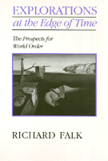

Envisioning the future through grassroots globalism
Envisioning the future through grassroots globalism


 Envisioning the future through grassroots globalism
Envisioning the future through grassroots globalism

|  |
Explorations on the Edge of TimeThe Prospects for World OrderRichard Falkpaper EAN: 978-1-56639-080-4 (ISBN: 1-56639-080-X) |
"This is a path-breaking book.... [Falk's] ideas are fresh, controversial, provocative. He not only expands traditional thinking beyond prevailing social science concepts of the inter-state system and the national interest, he also expands thinking beyond social science to include ethics and spirituality."
—Robert C. Johnson, Institute for International Peace Studies, University of Notre Dame
In his clear-sighted, humane, and provocative way, Richard Falk calls for a revolution in thinking about the future of world order. Explorations at the Edge of Time develops the idea that a major cultural shift from modernism to postmodernism is under way, creating both new difficulties and new opportunities in the domain of global public policy. The author observes, "A postmodem possibility implies the human capacity to transcend the violence, poverty, ecological decay, oppression, injustice, and secularism of the modern world." Recognizing that the concepts of "progress" and "development" have changed due to the breakdown of the modernist consensus, Falk contends that most problems have transnational dimensions. He proposes a commitment to grassroots globalism, and he challenges aspiring "citizen pilgrims" to think and act in ways that will enhance their feeling of identity with the rest of creation.
Falk's "rooted utopianism" challenges our political imagination in relation to pressing global problems and helps forge an overall vision of the future. What is at stake is the building of political understanding amidst the appreciation of unity and diversity for a hopeful entry upon the 21st Century.
Acknowledgments
Introduction: Why Postmodern? Why Explorations at the Edge of Time? Why Rooted Utopianism?
Part I: The Postmodern Frontier of International Relations
1. In Pursuit of the Postmodern
2. Religion and Politics: A Second Postmodern Possibility
3. Culture and International Relations: A Third Postmodern Possibility
Part II: Planning the Journey Ahead
4. Solving the Puzzles of Global Reform
5. Transition to Peace and Justice: The Challenge of Transcendence without Utopia
6. The Global Promise of Social Movements: Explorations at the Edge of Time
Part III: Rooted Utopianism as Political Option
7. The Extension of Law to Foreign Policy: The Next Constitutional Challenge
8. Can Culture Tame Nuclearism?
9. Evasions of Sovereignty
10. The Realist School and Its Critics: Interpreting the Postwar World
Notes
Index
 | Richard Falk is Albert G. Milbank Professor of International Law and Practice at Princeton University. He has published more than twenty books, including The Promise of World Order (Temple). |
Political Science and Public Policy
© 2015 Temple University. All Rights Reserved. This page: http://www.temple.edu/tempress/titles/747_reg.html.